Vista mar confort
Balcón o terraza grande (con suplemento) con mesa y sillas. Baño más amplio con bañera separada de la ducha. Dobles, triples y cuádruples (3 adultos y 1 niño).
Ver disponibilidad →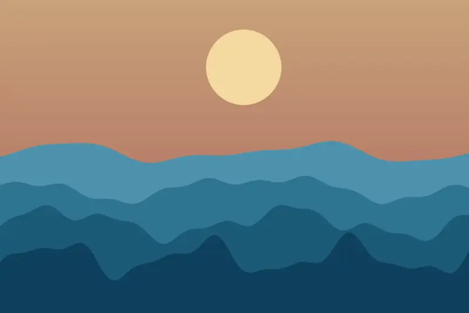
En la bahía de Cadaqués, con pequeña playa, jardín de olivos y pinos y piscina exterior climatizada.
El Hotel Playasol está en la bahía de Cadaqués, a primera línea de mar y a pocos metros del centro, rodeado del Parque Natural del Cap de Creus.
Tiene una pequeña playa enfrente y un gran jardín de olivos y pinos con piscina exterior climatizada, jacuzzi al aire libre y baño de vapor.
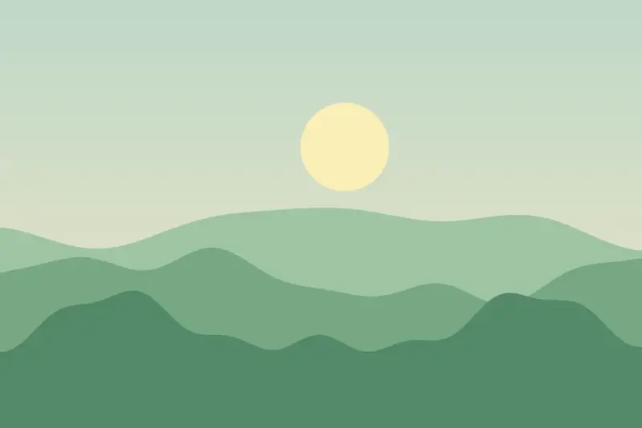
6 tipos de habitación, dobles, triples y familiares. Las imágenes son ilustraciones y no muestran las habitaciones reales.
Balcón o terraza grande (con suplemento) con mesa y sillas. Baño más amplio con bañera separada de la ducha. Dobles, triples y cuádruples (3 adultos y 1 niño).
Ver disponibilidad →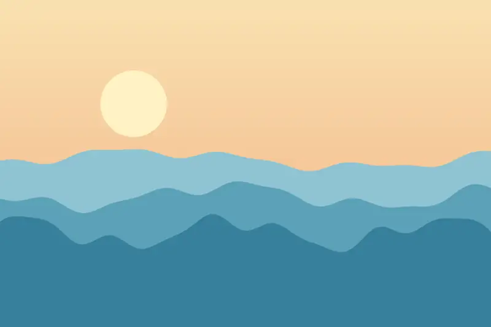
Dobles con cama de matrimonio o 2 camas individuales y balcón con mesa y dos sillas; 2 habitaciones tienen ventanas panorámicas sin balcón.
Ver disponibilidad →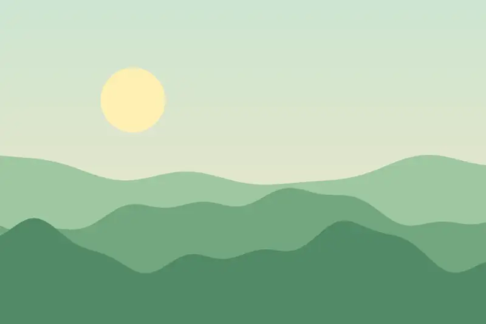
En su mayoría dobles (hay tres triples), en la parte trasera del edificio, con vistas a patios ajardinados o al jardín. No admiten cama supletoria.
Ver disponibilidad →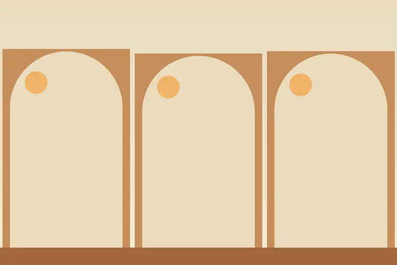
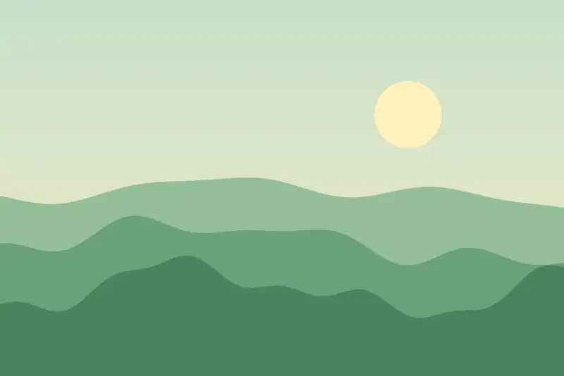
Dobles con cama de matrimonio o dos camas individuales y balcón con vistas al jardín y a la piscina. Hay 2 escalones entre el baño y la habitación.
Ver disponibilidad →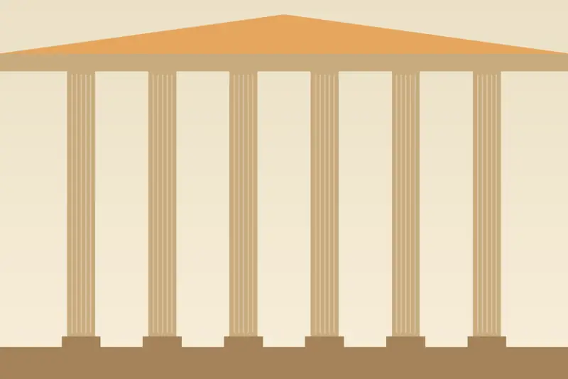
Doble de 2 camas (bajo petición, de matrimonio), con el confort de las vistas al mar pero sin bañera. Con reserva previa.
Ver disponibilidad →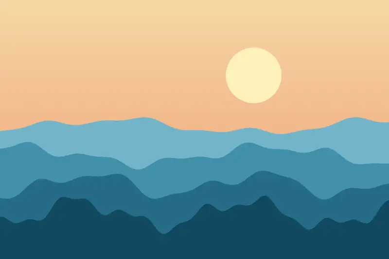
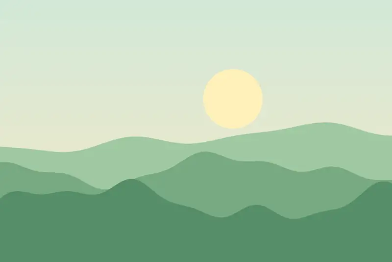
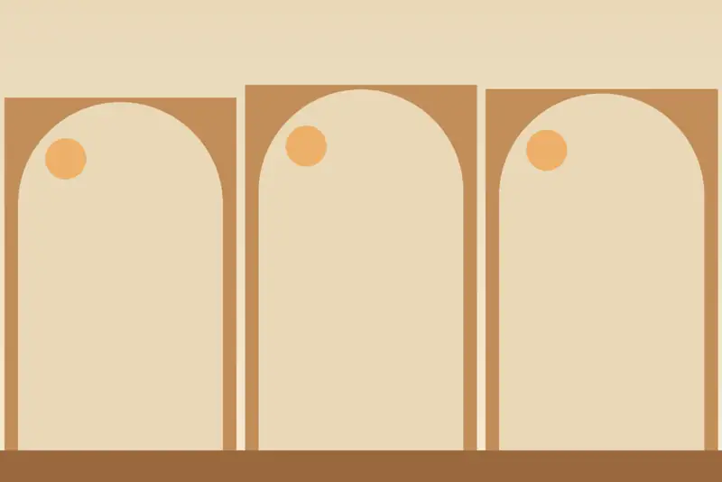
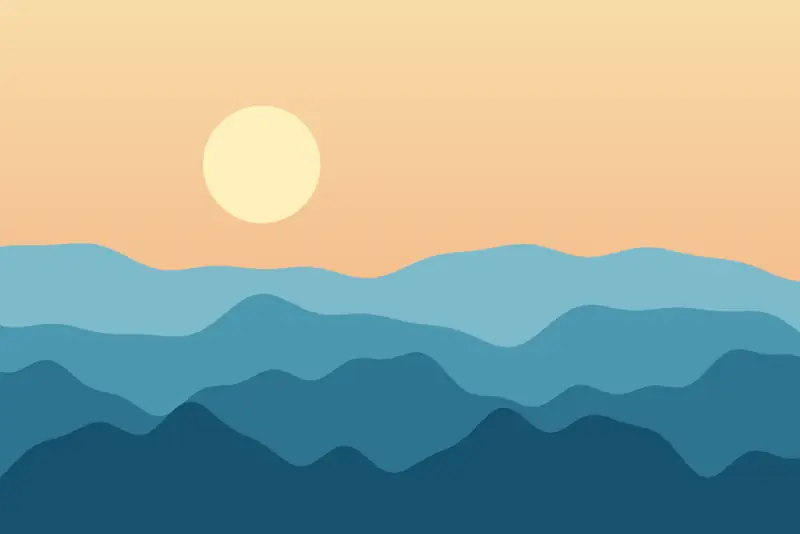
Cadaqués está a 35 km de la frontera francesa; a 25 km, el golf de Peralada.
En Platja Pianc, 3, en la bahía de Cadaqués (Girona), a pocos metros del centro y frente a una pequeña playa.
Platja Pianc, 3 · 17488 Cadaqués (Girona)